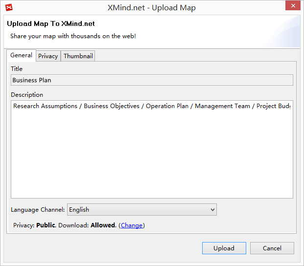
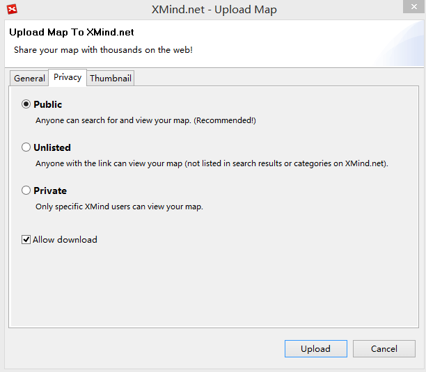
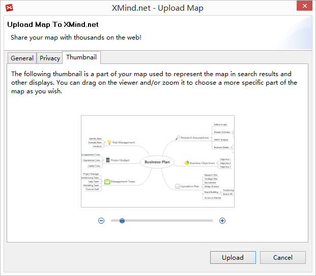
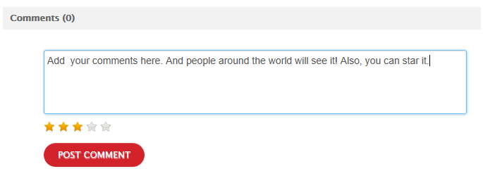
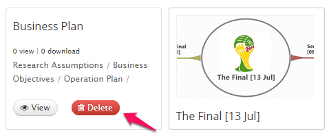
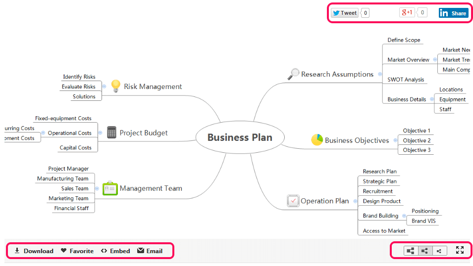
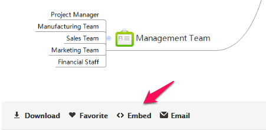

XMind Share
XMind Share is a free online service for us to share mind maps with families, friends, colleagues, and even the world! It can also work as the cloud storage of our favoriate maps. More important, we can embed the mind maps on our personal blog and site easily.
Upload map- We need an XMind account, if do not have, please sign up one.
- Click Sign into XMind.net under help menu, sign-in with our account.
- Open or Draw a map
- Click Upload button on the far right of toolbar
- Now, in the upload dialog, we should add the map description, change map's privacy, and mofify the thumbnail.
- Click Upload button on the dialog bottom and upload map.
Ok, let's check about the upload dialog
- General, here we can add the description for this map.
 - Privacy, here is the place to set the privacy of map, Pubic, Unlisted, or Private; and if it's downloadable.
 - Modify the Thumbnail

Delete/View/Comment a map
When the upload process finishes, clicking My XMind Account option under the help menu, we can see the uploaded maps in XMind inside browser easily. Then we can
- Delete: move the mouse over the mind map's thumbnail, and click the "Delete" option.
- View: move the mouse over the mind map's thumbnail, and click "View" option.
- Comment: add comments directly under the mind map. 

Map viewer

In this viewer, we can navigate, download, mark and share the map.
- Navigate: Drag and drop or use the scrollbar to navigate the map.
- Dowload: Click the download button at the bottom of the map directly.
- Mark: Add the map to your favorite maps by clicking the "favorite" button.
- Share: You can share the mind map via social networking, email, blog and website.
- Social Networking：You can now share the maps on your Pinterest and LindedIn page.
- Email: Click the "Email" button.
- Blog & Webstie: Click the "Embed" button, copy and paste the code on the coming dialog to your blog or website
Three different privacy settings
In the privacy page, we know any map can have three kind privacies, Public, Unlisted, and Private. The way to share maps with different privacies has a litter differences
- Public Maps has no limitations. They can be seen by any person and searched by search engine.
- Unlisted Map can not be searched by search engine. They are not shown on XMind Share too. People, only who know map's URL, can read it.
- Private Map is available for all XMind users. If you want to share a private with some people, you should click the special Share to button and send the invitation to them. People, who get the invitation email, should at least have a free XMind Account for reading this private map online.
Now we find that unlisted map should be helpful to share a map in some special stituation, such as at meeting,at class, and etc. And Private Map will be able to play an important role in collaborating within a small team, or share some special and important information.
This service is powered by Amazon S3 Service.